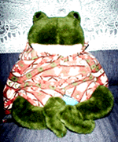
かえるくん ある人に連れられてやってきました。体つきがあかちゃんちっくなので、連れて歩くと女性に人気で、服を買ってもらったり、パンツ作ってもらったりしています。ちょっとうらやましいです。いつも車に乗せています。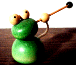
かえる耳かき 使っています。かえるに耳垢がたまることがあるんだろうか。いつも彼が使っているんですが、僕が使うときはちょっと拝借してしまいます。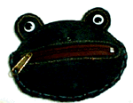
かえる小銭入れ けっこう使いにくい小銭入れです。毎日、彼の口の中に指をつっこんでぐりぐりするのもなー。支払ってもお金がすぐにカエルので、縁起がよいそうです。誕生日のプレゼントでした。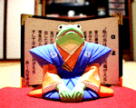
幸福かえる 円満な家庭がよみがえる。元気がかえる。おかねもかえる。亭主もはやくうちにかえる。。。。けっこうずくめの口上を書いた屏風を背にしたとのさまかえるです。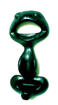
かえるせん抜き 歯がないかえるに栓を抜いてもらうなんて気が引けますよね。それで、使ったことはありません。舌がべろおおおおおおおんと伸びて、栓をくわえてスポンと開けるようにしたらいいのにな。でもカエルの特性を活かすには、栓抜きではなくて、かえる蝿とりとかだったら、もっと売れるかも。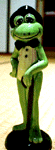
かえる紳士 英国風の紳士なかえるです。山高帽が似合っていますよね。蝶ネクタイも素敵です。ステッキを手にしたスタイルもいいしね。よい年齢になったら、彼のようにしゃきっとして街を歩きたいよね。。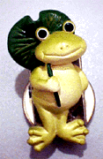
かえるクリップ 蓮の葉の傘を手にして、にこやかに微笑んでいます。玄関にいるんだけど、ここに今日の仕事とかのメモを挟んでおくと、いやな仕事でも快調にこなせるぞ。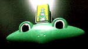
かえる挟み たべかけのスナック菓子の袋を綴じるのに重宝しています。書類とかを口にくわえてもらうのにも便利です。これって誘惑に負けて、ソニプラで買ってしまいました。かえるの３段重ねの絵もあって、なんだかほっとします。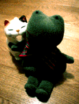
サンリオカエル ギンガムチェックの蝶ネクタイをして、きちんと座れるカエルです。左側のにゃんことセットでいただきましたので、常に２人はいっしょのところにおります。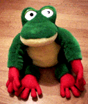
歌うかえる アメリカみやげに母親が買ってきました。「あんた、かえるが好きだったろ」だって。母親までが認識するなー（笑）。右手を握るとげこげこな声で、３分くらいずっと歌い出すんです。口をつまむと、少しずつ歌います。陽気な性格です。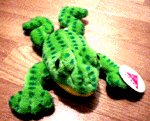
ごろごろかえる お腹がごろごろなるかえるです。夜中に地震とかあると、ごろごろごろごろいいます。転勤祝いにもらいました。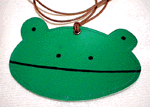
かえるパス入れ 定期券とかをいれるパス入れです。首にぶらさげる紐もついていて、これならサラリーマンも安心して使えます。地下鉄の定期を入れて通勤につかいましょう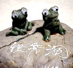
秋吉台みやげ 岩の上でくつろいでいるカエルです。これと類似パターンのカエル土産は全国各地にあるので、どこかに巨大カエル土産生産工場があるにちがいありません。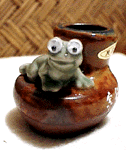
洞爺湖みやげ これもやはり、お土産かえるです。こちらは壷のへりでくつろいでします。海外にもこのパターンの土産があるらしいし、いったいどこが発祥の地なのでしょうか。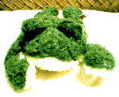
しわしわカエル しわしわの布で作ったかえるです。毛がふさふさしているので、目がかくれています。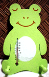
かえる寒暖計 温度計としても使えるし、ちょっとしたものなら両側に出ている突起にひっかけて使うこともできる。あまり寒いと、そろそろ冬眠かなー、とか思ってしまう。かえるのことをしのぶ寒暖計です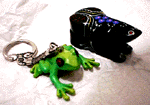
かえるキーホルダーとカエル小箱 キーホルダーはリアル系です。となりはカエル小箱です。小箱は南方系かな。いったい中になにをいれたらいいのだろと考えています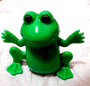
横歩きかえる 背中のぜんまいを巻くと、手足を横に動かして、にっこり笑いながら動くかえる。のーてんきで好きだなあ。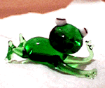
ごろ寝かえる すずしげなガラス製です。夏のひりさがり、縁側でごろごろしているカエルは、いいですねー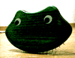
かえる櫛 これって、表からは見えないけど、ヘアブラシになっているんです。顔がかわいいのでヘアブラシとしては使わず、パソコンの隣に置いています。引っ越し祝いにいただきました。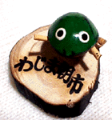
ぎんなん殻カエル 殻を利用して作った細工物です。手足がゆらゆら揺れます。繊細なので、いつもしまっています。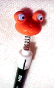
かえる鉛筆キャップ ちびた鉛筆を最後まで使うために、これを購入しました。かえるがゆらゆらしていて、とっても楽しいです。鉛筆が長いときから使ってもいいよ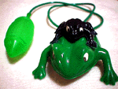
空気でぴょおおんカエル 夜店で売っていた空気でぴょーんカエルをもらいました。よくできていますよね。子供のコロかってもらったこの種のかえるは、あそんでいるとすぐに破れてとばなくなっていたけど。。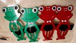
かえる髪留め クリップだと思っていたら、ひろりんさんから『ちがう』と指摘されました。あれはクリップじゃないですよ。「ぱっちんどめ」です。髪の毛とめるものです！紙とめるもんじゃあないっす！わたしも カエル暦10年のコレクターなのだ！フヒャヒャヒャ。そのうちわたしの家族を紹介したいです。ぜひ紹介してください！！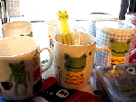
かえる歯磨きセット うれしいぞ。でも、汚い歯をみががせたりするなよ。カエルには歯がないんだから。ブラシは腰がなくて、くにゃくにゃしてそうだ。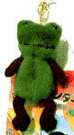
首つりかえる ちょっと悲しげなカエルです。キーホルダーなのですが、巨大なので、カレンダーのフックに引っかけています。なんだか首をつっているみたいで、可哀想でいとおしいです。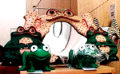
カエル鏡など この鏡が欲しいな。そう思ったのですが。ちょっとお値段が高いです。ずいぶん迷って結局買わなかったけど、その後、まったく別の縁で手前のかえるくんを、いただくことになってしまいた。ありがと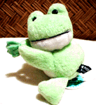
カエルだっこちゃん 腕にまきつけてもいいよ。会社とかで、サラリーマンがワイシャツのそでにさりげなくカエルをしていると、なかなかおしゃれだぞ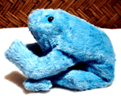
カエルもぐら ゲーセンからやってきたのです。必要最小のカエルな条件をそなえて作るとこうなるのかな。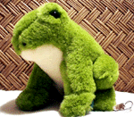
カエルべるつのもどき いま大流行のベルツノカエルをモデルにしたかえるぬいぐるみ。これを機会にもっと精密なものがでるかなー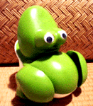
ぱくぱくかえる ぜんまいを巻くと、ぱくぱくと口を開閉しながら、動きます。口の開閉に多くの動力を使ってしまうので、それほど前進はしません(笑)。敬愛する隊長からいただいたものです。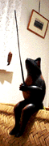
釣りのかえる 南方製でしょうか。優雅に釣り糸を垂れています。なんか魚が釣れているみたいだけど、いつも彼はぼーっとながめているだけです。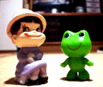
ぺこちゃんとケロちゃんかえる ツーショットの写真です。ケロちゃんカエルは、ぺこちゃんは昭和６０年式でケロちゃんカエルは後期型です。なかなかお似合いのカップルですよね。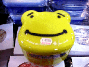
かえる弁当箱 会社で広げる弁当箱は、やはりこれでなくてはね。緑を基調としているので、プチトマトとかがとっても栄えるぞ。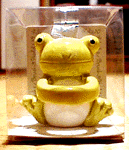
かえるタオルつかみ ここにハンカチとか小さなナプキンとかいれるらしいです。なんなのかちょっと不明。箱入りです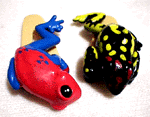
かえるクリップ これで紙をとめて上司の報告書を作れば、きみの仕事の評価もぐっと高まるぞ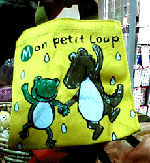
かえる弁当入れ かえる弁当箱に入れたなら、やはり、これで包まないとね。なぜだか、ワニとカエルが手を取り合って踊っている。ワニは爬虫類でしょ。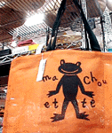
かえる買い物袋 買い物はこれでゆこうよ。学校の通学用に指定された商品とのうわさもあるが、どこの学校か特定できていないのが残念だ！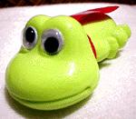
かえるスーパーマン マントをせおって空を飛んでいる。実はおしりに鉛筆けずりの穴を搭載しているのだ。さあ、これで鉛筆をけずろう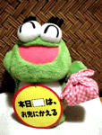
元気なかえる これも隊長からいただきました。お先にかえる、とにこやかです。仕事が忙しいときなど、机の上にこれをさりげなく置いて、さっさと引き上げると同僚も許してくれるぞ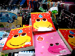
カエルノート 関西地区にあるカエル関連文具を専門に作っているメーカーが出しているカエル関連文具のひとつ。会社は大阪にあるみたいです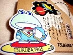
カエル絵馬 これさえあれば受験も出産もすべて安心だ。神社にいっていますぐ奉納しよう。この絵馬は宇宙航行安全用です。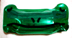
カエル透明ケース 旅行に行くときに、歯磨きセットなどを入れるケース。目玉が収納にちょっと不便だけど、カエルにするために、目玉は不可欠だからね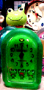
かえる時計 おおおっ！もうこんな時間か。会社のデスクの上には、ぜひともカエル時計を置きましょう。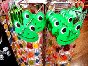
かえるグミ かえるグミのオリジナリティーは、ドイツが先輩だとおもうんだけど、ドイツ製グミは。まずくて吐きそうなのが難点であった。こちらは、それに比べると、まだおいしい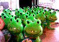
かえるラムネ菓子 どうせ買うなら、かえるラムネにしよう。でも３００円もするぞ。お母さんが、それは高いからこっちにしなさい。と強要されても、屈するな。このカエルラムネでないと絶対にやだ、といってだだこねよう。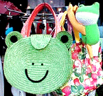
かえる麦わらバッグ 夏の季節には浴衣にも似合う、このバッグで街や海にでかけよう。男性がもってもちっともおかしくないと思うぞ。ビジネスマンにもぴったりだね(笑)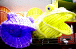
かえるゴミ箱 口をがばっと開いて、かみくずをかを受け入れてくれます。色は４種類くらいあるので、お部屋の感じにあったものを選ぼう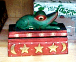
かえるティッシュ入れ ティッシュを入れる箱にいろいろ悩んでいたが、これで決まりだ。でも、かえる君が上に乗っているので、すぐにはティッシュが使えない。それで、ティッシュの箱を外に出して利用するととっても便利だ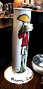
かえる傘立て 梅雨の季節には、このカエル傘立てさえあればだいじょうぶだ。外で雨に降られても、帰宅すると傘立てカエルが水分を楽しんでくれるぞ。